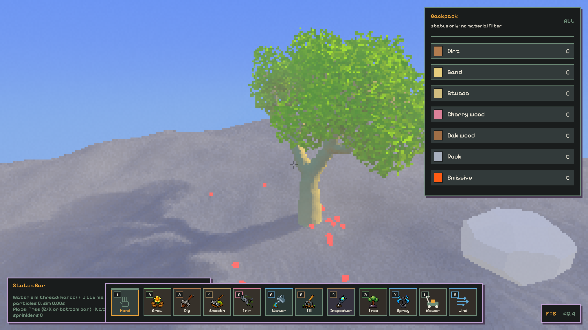
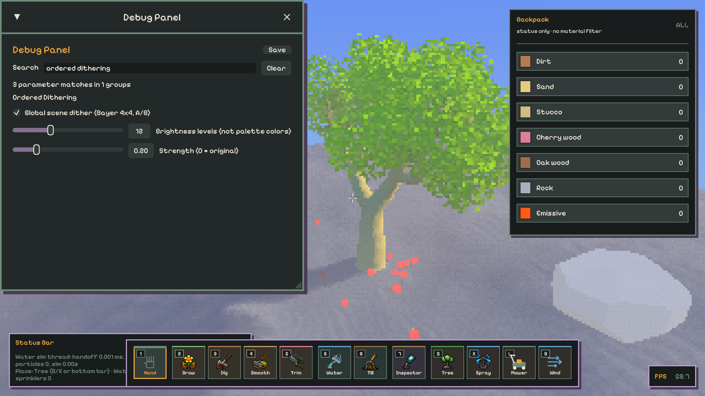
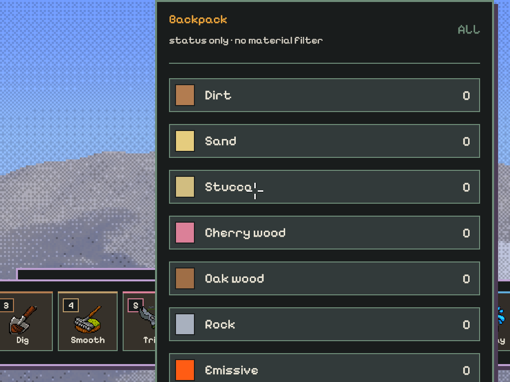

一个全局开关 · 固定 Bayer 4×4
当前游戏只保留 Global scene dither (Bayer 4x4, A/B)；保留 Brightness levels 与 Strength 的统一保存。分项开关及其局部量化已删除，没有 Pattern 选择或另一种图案。此页同步只展示全局 Bayer。
全部 scene（地形、模型/植被、天空、光照、玻璃与相机效果）合成、tone-map 和像素颜色 resolve 后，只处理一次。HUD / Debug UI 不经过它。God Rays / Flare / 环境光和玻璃缓存保留原来的计算与采样，不再包含 dither 分支。
实现 03b16c91 · 真实 Release/Vulkan 图片与 Canvas 模拟分开 · 未完成最终运动或性能验收。研究记录与历史证据
真实游戏：关闭 / Bayer / 强度零 / 关闭返回
以下为此次简化后的隐藏静音 Release 原生 PNG，不是网页重绘。每个场景在同一 App 内切换真实保存字段，四阶段都使用相同 pixel ratio/source density/resolve。捕获期间世界仍在模拟，不宣称动态全图 bit-exact。

当前 GUI：一个开关、两个调整参数
Debug → Search: ordered dithering。关闭时 Levels / Strength 禁用但偏好保存；统一 Save 不变。

奇数尺寸与 partial blocks
四档 ratio × 两档 source density × 两种 resolve 的 16 阶段验证，中途改为 1023×767。图案使用最终 scene cell，边缘裁切、不拉伸。

同源模拟：原色 / 单纯亮度阶 / Bayer
以下为 encoded-RGB Canvas 算法模拟，不是游戏/GPU证据。不模拟 HDR、DDGI、玻璃、tone-map 或 Contrast-aware；所有卡共用同一源图、阶数与强度。
Bayer 4×4 rank
16 个不同 rank，以 (rank+0.5)/16 为阈值。最大 encoded RGB 分量选择相邻亮度阶，同一比例缩放整份颜色；不是逐通道拼色，也不是全图仅 N 色的 palette。强度零/关闭在任何颜色转换前返回原路径。
来源与边界
- Lucas Pope 2014 与 2017 Obra Dinn 日志：重复阈值、Bayer 和运动 swimming 的折衷；本项目没有复刻其稳定化。
- Aseprite API / 源码：palette 色对选择与 ordered dither。我们的亮度阶不是完整 palette 搜索。
- ImageMagick thresholds.xml 的 o4x4 rank；使用中点阈值而非 level/17。
- Joel Yliluoma 作者文章：任意 palette 的位置量化。文章中的 Chrono Cross 是示例输入，不是原游戏算法证据。
图案固定在最终场景像素格，移动时仍可能 swimming、遮盖细节。Contrast-aware resolve 的整份 source RGB 选择未改；后续 dither 创造明暗变体，不能保证最终颜色还属于原始样本集合。
当前验证
1366 app + 4 library Rust 测试通过（出厂配置隔离副本，5 ignored），37 Slang CPU 测试通过；主工作区 Release、hidden/muted smoke、花园/太阳/玻璃四阶段 A/B、16 阶段像素格、GUI 共 29 PNG，Khronos validation + 同步验证无 ERROR/VUID/panic。运行未保存配置。本次报告；旧研究报告（非当前开关/API）。
CARGO_BUILD_JOBS=2 cargo build --release
node scripts/validate-ordered-dither.mjs compare
# 也支持 smoke / sun / glass / grid / gui；旧输出先移走，脚本拒绝混入旧证据。
Debug → Search: ordered dithering
只切 Global scene dither (Bayer 4x4, A/B)。Levels / Strength 统一 Save。
没有新增公开游戏启动参数；没有专项 Release 性能测量。直接 file:// 打开，请保留相邻 ordered-dither-assets 目录。默认出厂开关关闭；用户现有 global/levels/strength 值不会被简化迁移重置。